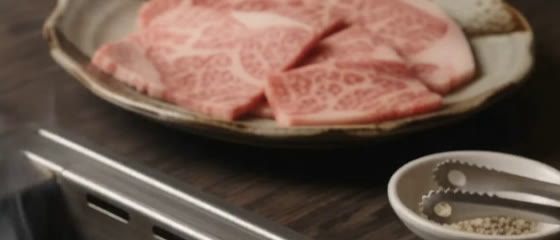
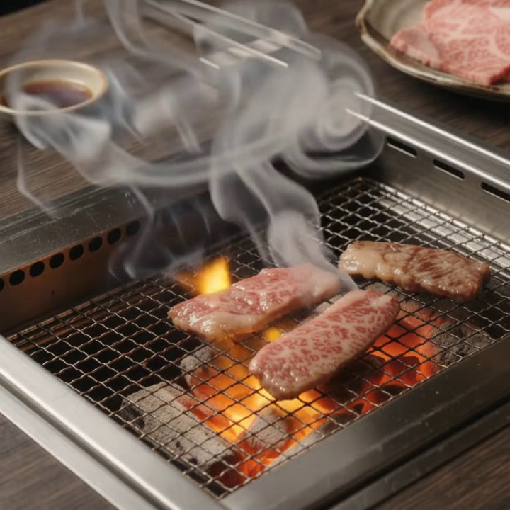
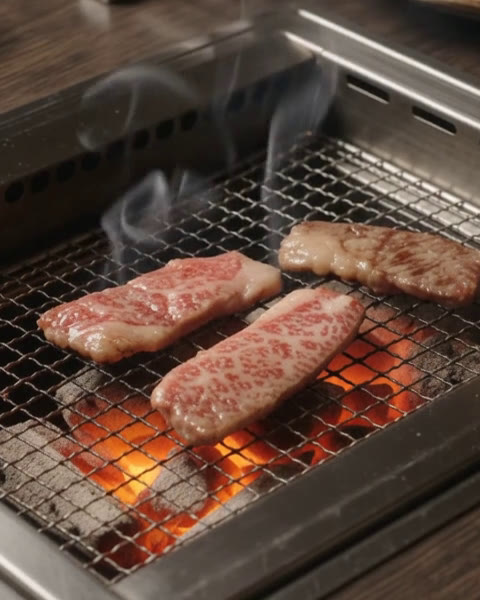
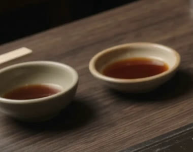
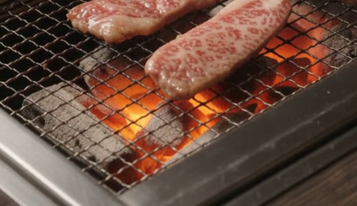
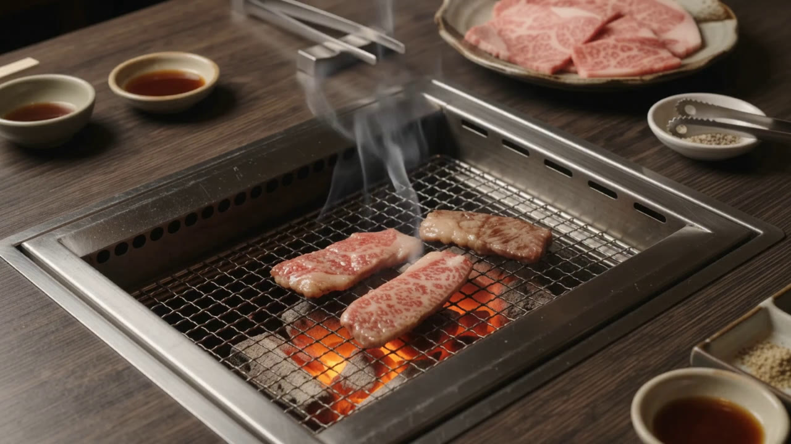
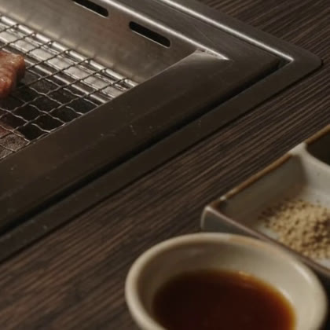

I
Japanese Wagyu 和牛
Fine, even marbling that melts at body temperature. Sliced thin, it turns translucent on the grill in seconds, with a sweetness that lingers.
HACHIOJI, TOKYO 八王子
An intimate counter and a handful of private rooms. Japanese wagyu, white charcoal and a quiet kind of hospitality, a few minutes from Hachioji Station.
Our Philosophy 哲学
One cut of wagyu, given our full attention.
良い焼肉は、良い肉だけでは完成しません。部位の見極め、炭の温度、焼き上げの一瞬、そして食卓を包むおもてなし。そのすべてが揃ったとき、和牛は本来の味を語り始めます。
Great yakiniku is not simply about premium ingredients. It is the balance of the cut, the heat of the charcoal, the timing of the grill, and the hospitality that surrounds the meal. When all four meet, wagyu speaks for itself.

02 · The Wagyu 和牛
Select cuts of Japanese wagyu, chosen each morning and cut in-house to order.*

Fine, even marbling that melts at body temperature. Sliced thin, it turns translucent on the grill in seconds, with a sweetness that lingers.

Misuji, zabuton, rib cap. Lesser-known cuts, each trimmed to show its own texture: tender, dense, or richly juicy.

House tare aged in small batches, salts from the coast, and vegetables that change with the market.

White charcoal burns hot and clean, with almost no smoke of its own. The fat drips, flares, and gives back a faint, sweet aroma.
* Demo copy. Sourcing, grades and cut availability are placeholders and must be confirmed by the restaurant before launch.
The Experience · 01
It begins before you arrive. Binchotan is lit an hour ahead, until it glows evenly and burns almost without flame.
The Experience · 02
Each cut is sliced only when you are seated, so the fat stays cool and the texture stays exactly as it should.
The Experience · 03
A few seconds per side. Your server will guide the first piece, then leave the rhythm to you.
The Experience · 04
Fire, cut and timing, joined by a single motion. That moment is what we have built the evening around.
04 · Dining 空間
Dark walnut, stone and paper lanterns. Every table has its own grill and its own hush, whether it is a first date or an important dinner with clients.


Private rooms are available for anniversaries, celebrations and business dinners. Tell us the occasion when you reserve, and we will prepare the evening around it.
Room types, capacities and facilities are placeholders, to be supplied by the restaurant.
Enquire about a private room05 · Reservation ご予約
Seating is intentionally limited. We recommend reserving at least a week ahead, and earlier for private rooms and weekend evenings.
This is a concept website. No booking system is connected; actual reservation details must be supplied by the restaurant.
06 · Access アクセス
Map placeholder · location to be supplied